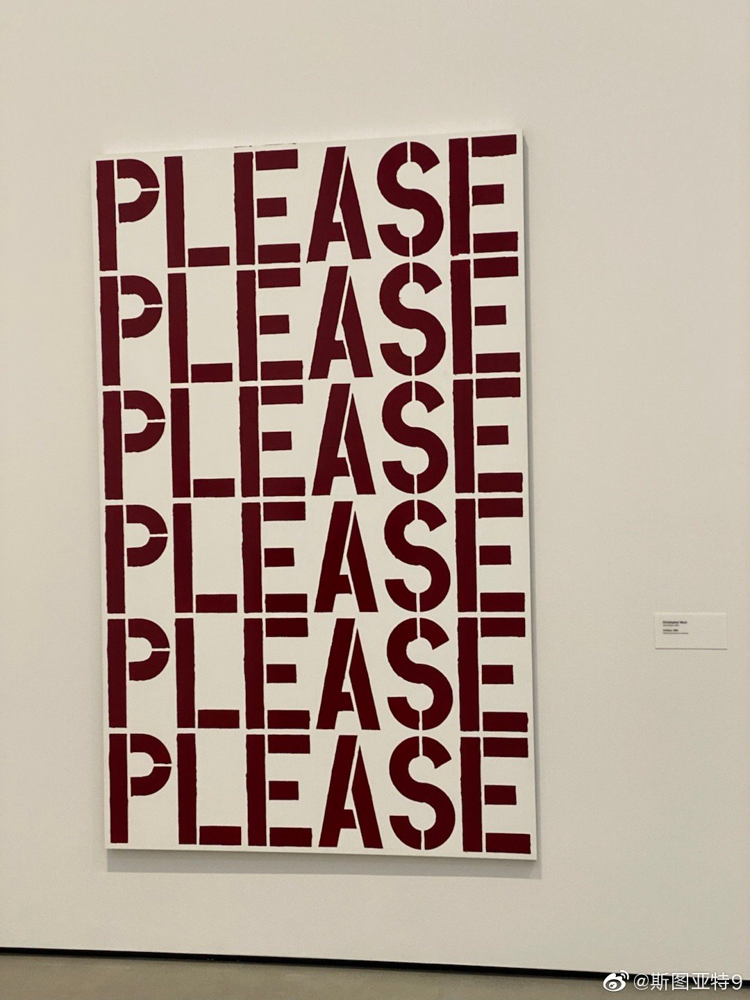

美国为了变异搞的旅行禁令效果一定一如既往收效甚微的。美国公民才是从各个地区带变体到美国的主力，而禁令对归来的美国人并没有任何限制，就连居家隔离和之后检测都没有。更何况变体肯定已经传遍世界各地了。也就做做样子吧。与其告旅行禁令，还不如对入境者强制居家隔离并追踪检测来得靠谱。

斯图亚特9
2021-11-27
斯图亚特9
2021-11-27
新冠流行两年出现的两个占领世界的变体Alpha和Delta都是传染性更上一层楼的变体。逃逸免疫的变体倒都在Alpha、Delta面前败下阵来。所以Omicron的传染性到底如何可能是比是否能逃逸免疫更加重要。

斯图亚特9
2021-11-27
我知道会被人骂无知，但是看到这样的艺术品还是忍不住想吐槽😂
- 